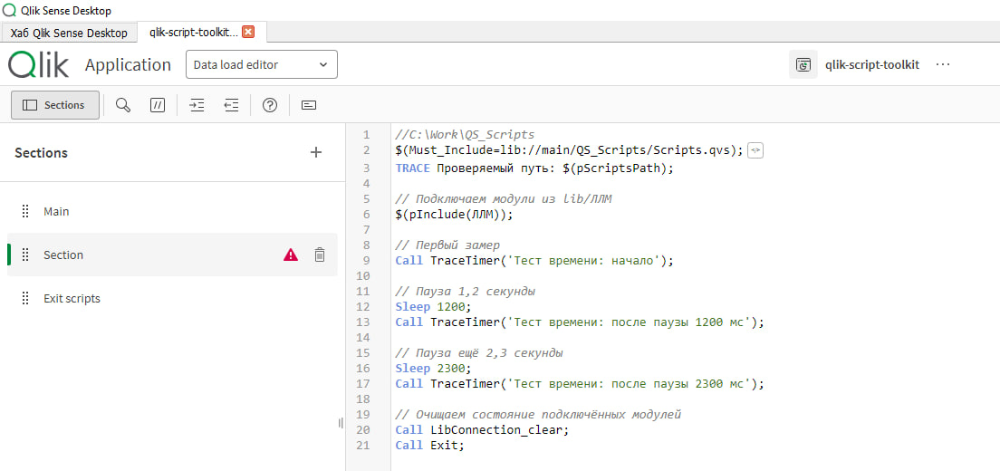
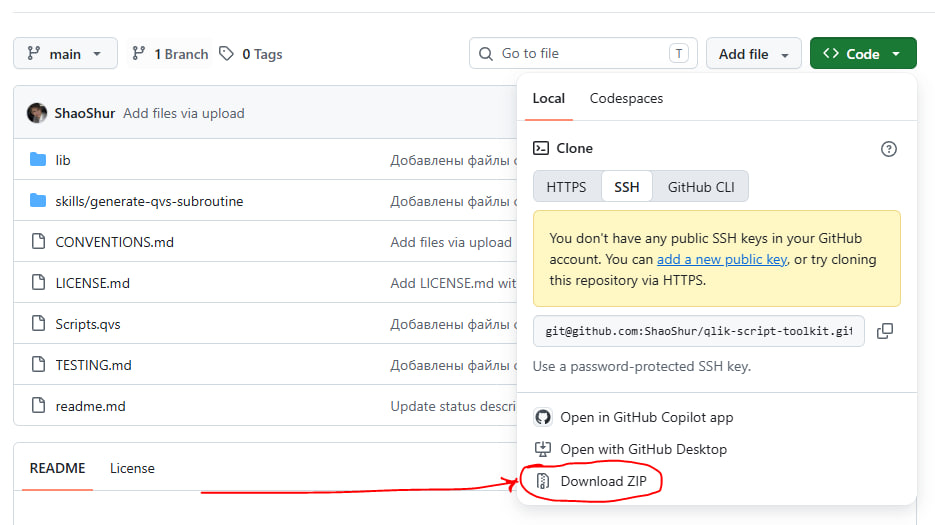
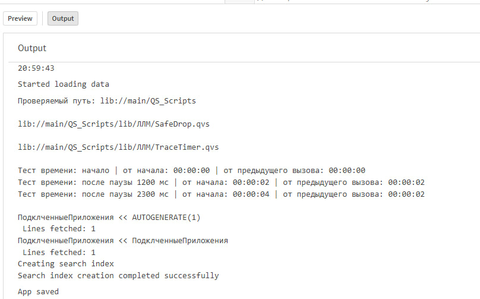

Scripts.qvs
Подключает общий загрузчик и единые правила работы модулей.
Qlik Script Toolkit
Вместо растущих header.qvs и footer.qvs — независимые библиотеки подпрограмм. Каждый QVS-модуль работает как единственный экземпляр со своим публичным интерфейсом, состоянием, справкой, тестом и очисткой.
Авторский разбор и обсуждение проекта — в канале ShurQlik ↗
01 / КАК РАБОТАЕТ
pInclude подключает выбранную группу модулей. Загрузчик обходит её каталог, находит QVS-файлы и собирает обработчики очистки — приложение не нужно менять при появлении нового файла в библиотеке.
Подключает общий загрузчик и единые правила работы модулей.
Подключение библиотек одной строкой.
Новые файлы библиотеки находятся и подключаются автоматически.
Каждый модуль сам описывает очистку своего временного состояния.
02 / ЗАЧЕМ
Подход разделяет логирование, контроль качества, разработку и другие задачи на самостоятельные библиотеки. Масштаб проекта перестаёт влиять на читаемость основного скрипта приложения.
Одна задача — один файлМодуль можно развивать, тестировать и передавать отдельно от остальных библиотек.
Понятный публичный интерфейсРазработчику доступны только описанные методы; внутреннюю реализацию не нужно знать для использования.
Обмен внутри сообществаQVS-файл, собранный по общим соглашениям, можно добавить в библиотеку без ручного списка подключений.
03 / ИСПОЛЬЗОВАНИЕ
Один базовый include и одна строка на нужную библиотеку. Подробная установка и настройка окружения остаются в README репозитория.
$(MUST_INCLUDE=lib://*/Scripts/Scripts.qvs); // подключаем общий скрипт
$(pInclude(ККД)); // подключаем библиотеку скриптов
// Работаем
Call Exit;04 / КОНТРАКТ
В репозитории лежат skills для создания QVS-модулей, а CONVENTIONS.md задаёт общие правила имён, интерфейсов, тестирования и очистки.
Агент получает специализированные инструкции и создаёт новый QVS-файл в рамках принятого контракта.
Общие соглашения снижают риск конфликтов. Системные переменные toolkit используют зарезервированный префикс p.
Публичные методы явно перечислены в справке, а служебные подпрограммы остаются внутренней реализацией модуля.
Модуль сообщает назначение, ответственного, параметры, публичные методы и пример использования.
Тестовый вызов демонстрирует работу модуля без production-данных и помогает проверить результат после изменений.
Модуль удаляет созданные переменные и временные объекты, не оставляя служебное состояние в итоговой модели.
05 / ПРИМЕР
Тестовое приложение подключает библиотеку ЛЛМ, несколько раз вызывает модуль измерения времени и показывает результат в журнале загрузки.



06 / ПОПРОБОВАТЬ
Репозиторий содержит актуальные библиотеки и правила разработки. QVF позволяет посмотреть тестовый сценарий, а пост в ShurQlik — обсудить сам подход.
Исходный код, структура библиотек, skills для AI-агентов и история изменений.
Открыть репозиторий ↗ TEST APP / QVFПример подключения toolkit и работы модуля TraceTimer в Qlik Sense Desktop.
Скачать QVF · 176 КБ ↓ POST / SHURQLIKЗачем Qlik-подпрограммам модульность, единый контракт и собственный жизненный цикл.
Открыть в Telegram ↗07 / ДОКУМЕНТАЦИЯ
Практические шаги вынесены в документацию проекта: README отвечает за установку, CONVENTIONS — за совместимость модулей, TESTING — за проверку через Qlik Engine.
Структура репозитория, подключение toolkit и минимальный рабочий сценарий.
Открыть на GitHub ↗ CONVENTIONS.MD / CONTRACTИмена, публичный интерфейс, служебные переменные, справка, тест и очистка.
Открыть на GitHub ↗ TESTING.MD / ENGINEЗапуск тестового сценария через Qlik Sense Desktop и анализ результата загрузки.
Открыть на GitHub ↗PUBLIC QLIK PROJECT
Код живёт на GitHub, а новые идеи и практические заметки по Qlik — в канале ShurQlik.